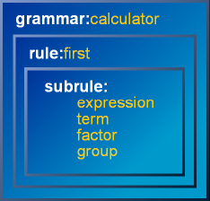

| 子规则 |
 |
 |
 |
Spirit 使用表达式模板实现. 这是一种非常强大的技术. 力量伴随而来的是一些复杂性. 我们几乎理所当然地认为, 当写下 i | j >> k 而 i, j 与 k 都是整数时, 结果仍然是整数. 然而, 对于表达式模板, 同样的表达式 i | j >> k 在 i, j 与 k 的类型为 T 时, 结果是一个复杂的组合类型[见 Basic Concepts]. Spirit 表达式是原语与组合器的组合, 产生无穷无尽的新类型. 一个问题在于, C++ 没有提供简便的设施来推导会产生复杂类型的任意复杂表达式的类型. 因此, 虽然这样写很容易:
int r = i | j >> k; // where i, j, and k are ints表达式模板产生无穷无尽的类型. 若没有 rule, 当 i, j 与 k 是 Spirit 解析器时, 在 C++ 中就没有简便的方法做到这一点:
<what_type???> r = i | j >> k; // where i, j, and k are Spirit parsers若 i, j 与 k 都是 chlit<> 对象, 我们想要的类型是:
typedef
alternative<
chlit<> // i
, sequence<
chlit<> // j
, chlit<> // k
>
>
rule_t;
rule_t r = i | j >> k; // where i, j, and k are chlit<> objects我们刻意把类型声明排版得漂亮些以便理解. 试试更复杂的表达式. 虽然可以做到, 但显式写出 Spirit 表达式模板的类型既繁琐又易错. 右侧(rhs)必须与左侧(lhs)的类型互为镜像.( 不过, 如果你仍想这样做, 请见此 链接了解一种技术).
不过, 如果你仍想这样做, 请见此 链接了解一种技术).
|
幸运的是, 规则前来救场. 规则可以捕获赋给它的表达式的类型. 于是:
rule<> r = i | j >> k; // where i, j, and k are chlit<> objects可能并不显眼, 但在幕后, 普通规则实际上是用一个指向运行期多态抽象类的指针实现的, 该抽象类持有赋给它的解析器的动态类型. 当一个 Spirit 表达式被赋给规则时, 它的类型被封装在抽象类的一个具体子类中. 一个虚 parse 函数把解析工作委派给被封装的对象.
不过规则有缺陷:
 它与特定扫描器类型耦合. 规则绑定到特定扫描器[见 The Scanner Business].
它与特定扫描器类型耦合. 规则绑定到特定扫描器[见 The Scanner Business].
 规则的 parse 成员函数带有无法内联的虚函数调用开销.
规则的 parse 成员函数带有无法内联的虚函数调用开销.
子规则(subrule)是规则的完全静态版本. 子规则没有上面列出的缺陷.
 子规则不绑定到特定扫描器, 因此几乎任何扫描器类型都可以使用
子规则不绑定到特定扫描器, 因此几乎任何扫描器类型都可以使用
 由于没有虚函数调用, 子规则还允许激进的内联
由于没有虚函数调用, 子规则还允许激进的内联
template<int ID, typename ContextT = parser_context<> >
class subrule;第一个模板参数赋予子规则一个标识标签. 与 rule一样, 还有一个 ContextT 模板参数, 默认为 parser_context. 除非你想要调整子规则的底层行为, 否则完全无需关心 ContextT 模板参数. 有关 ContextT 模板参数的详细信息在 其他地方提供.
上面给出的是公开 API. 在 ContextT 之后实际上可能还有更多模板参数. ContextT 参数之后的一切都不属于使用者需要关心的事项, 仅供内部使用.
除少数细微差别外, 子规则紧随规则的使用方式与语法. 下面是使用子规则的计算器文法:
struct calculator : public grammar<calculator>
{
template <typename ScannerT>
struct definition
{
definition(calculator const& self)
{
first =
(
expression = term >> *(('+' >> term) | ('-' >> term)),
term = factor >> *(('*' >> factor) | ('/' >> factor)),
factor = integer | group,
group = '(' >> expression >> ')'
);
}
subrule<0> expression;
subrule<1> term;
subrule<2> factor;
subrule<3> group;
rule<ScannerT> first;
rule<ScannerT> const&
start() const { return first; }
};
}; 带有 语义动作的完整可运行示例可 在此查看. 它是 Spirit 发行包的一部分.
带有 语义动作的完整可运行示例可 在此查看. 它是 Spirit 发行包的一部分.
 |
子规则是规则的高效版本. 激进内联等编译器优化有助于显著减小代码体积并提升性能.
不过子规则并非万灵药. 子规则会把 C++ 编译器逼得很惨. 例如, 当前编译器对递归深度有一个不可逾越的限制. 别想仅用子规则写出完整的 Pascal 文法. 使用子规则的文法是单个 C++ 表达式. 当前 C++ 编译器无法很好地处理非常复杂的表达式. 最后, 仍然需要一条普通规则充当子规则的占位符.
上面的代码是使用子规则的推荐方式的一个好例子. 注意这个层次结构. 我们有一个封装了整个计算器的文法. 开始规则是一条持有子规则集合的普通规则. 子规则再定义文法的实际细节.
Spirit 把 C++ 编译器逼得很紧. 当前 C++ 编译器无法很好地处理非常复杂且深度嵌套的表达式. 一个限制因素是典型编译器对模板递归深度的限制. 一些(但非全部)编译器允许配置这一限制. g++ 的最大值可以通过编译器旗标设置: -ftemplate-depth. 若你的文法相对复杂, 请适当设置它. Microsoft Visual C++ 的模板类与函数实例化深度都可以超过 1000. 然而, 若不使用以下 pragma 设置内联递归深度, 链接器会在深度模板函数实例化时卡住: #pragma inline_depth(255) #pragma inline_recursion(on) 也许这些限制已不再适用于这些编译器的更新版本. 务必查阅你的编译器文档. |
这种设置给出了良好的平衡. 子规则承担全部工作. 每个文法只有一条规则: first. 这条规则只用来持有子规则, 并让它们对文法可见.
与规则一样, 赋值运算符 = 之后的表达式定义子规则:
identifier = expression
与规则不同, 子规则只能定义一次. 重定义子规则是非法的, 将导致编译期断言.
规则以分号 ';' 终结. 子规则不用终结符, 而是用逗号分隔: ','. 与 Pascal 语句一样, 一组子规则中的最后一条可以没有尾随逗号.
a = ch_p('a'), b = ch_p('b'), c = ch_p('c'), // BAD, trailing comma
a = ch_p('a'),
b = ch_p('b'),
c = ch_p('c') // OK与规则不同, 解析从开始子规则进行. 一组子规则中的第一个(最顶层)子规则被称为 开始子规则. 在上面的示例中, expression 是开始子规则. 当一组子规则被调用时, 开始子规则 expression 最先被调用.
每个子规则都有一个对应的 ID; 一个唯一标识该子规则的整型常量. 上面的示例有四个子规则. 它们声明为:
subrule<0> expression;
subrule<1> term;
subrule<2> factor;
subrule<3> group;允许存在具有相同 ID 的子规则. ID 相同的子规则互为别名. 两个子规则可以互换使用.
subrule<0> a;
subrule<0> alias; // alias of a子规则及其定义的作用域是其外围组, 通常(按照惯例)包围在圆括号内. 作用域之外的 ID 不可直接见. 内层子规则组可以通过把每个子组再包围进另一对圆括号来嵌套. 每个组都是独立的, 各自独立运作. 因此, 虽然可能并不建议这样做, 一个组中的子规则可以与另一个组中的子规则共享相同的 ID, 因为两个组彼此独立.
subrule<0> a;
subrule<1> b;
subrule<0> c;
subrule<1> d;
( // outer subrule group, scope of a and b
a = ch_p('a'),
b =
( // inner subrule group, scope of b and c
c = ch_p('c'),
d = ch_p('d')
)
)子规则 ID 只需要在组内唯一. 文法是一个隐式组. 此外, 即使在文法中, 只要位于某个组内, 子规则也可以拥有相同的 ID 而不冲突. 子规则可以用圆括号显式分组. 带括号的组拥有独特的作用域. 在上面的代码中, 外层子规则组定义了子规则 a 和 b, 而内层子规则组定义了子规则 c 和 d. 注意 b 的定义就是内层子规则.
|
|
|
Copyright © 1998-2003 Joel de Guzman
使用、修改与分发受 Boost 软件许可 1.0 版(Boost Software License, Version 1.0)约束. (随附文件 LICENSE_1_0.txt 或复制于 http://www.boost.org/LICENSE_1_0.txt)